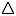
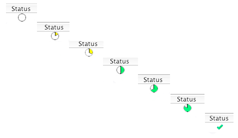

The ' Transactions'
tab shows all the transactions for the wallet selected in the '
Transactions'
tab shows all the transactions for the wallet selected in the ' Wallets'
side panel. This tab shows the user:
Wallets'
side panel. This tab shows the user:
The status of the transaction. The status icon shows two important characteristics of the transaction. First, it indicates if the transaction has been broadcast to the Monacoin network successfully. MultiMona sends the transaction on one of the peers it is connected to and then listens to all the rest for the transaction being retransmitted. The icons used are as follows:
 Seen by no peers
Seen by one peer
 Seen by two peers
Seen by two peers
Seen by three peers
Seen by 4 or more peers
When a transaction has been seen by two or more peers it is definitely out in the Monacoin network. (You can then spend your change in the transaction).
